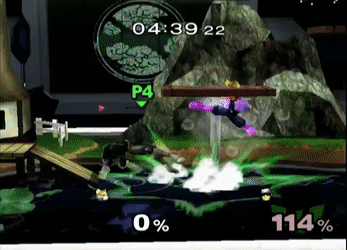

These two terms are ubiquitous to any fighting game, and the Super Smash Bros. series is no different. To perfect either of these is to perfect the game, as the opponent will never land a hit or will die on any hit.
The neutral game occurs when neither you nor your opponent have the advantage. To gain the advantage, you have to land the first hit on the opponent, and punish the opponent for getting hit, changing the state from neutral to punish. The neutral game is a fundamental part of any good fighting game, and often shares the same strategies, regardless of the game. These strategies include pressuring the opponent offensively, playing defensively to make the opponent slip up, or predicting (or reading) the option your opponent will take after you force them into a situation with a limited number of options. The neutral game is where playstyles are apparent, as there are many different approaches to it, and it is where you can be creative in how you play.
The punish (or combo) game occurs after the first hit is landed. Here, you use the first hit to chain into other attacks, finishing with a kill move to take their stock. This is where different characters will have noticeably different gameplay (though in the neutral, different characters are better suited to some options more than others). A perfect combo, or zero-to-death, consists of you consistently landing attacks on your opponent without them ever escaping or running out of hitstun until they die. Note that this is not required, as a very viable strategy involves reading where the opponent will tech (this is known as reaction techchasing).
If you are on the receiving end of a combo, your goal is to escape it, resuming the neutral game. Many tools are given to you for this, including crouch cancelling, DI, SDI, essentially any movement option, teching, and evasion options (shielding, rolling, spotdodging, or airdodging). Note that your opponent can use mixups (using a different option than you were expecting) or reads to prevent this. For improving neutral, combos, and escaping combos, practice is necessary.